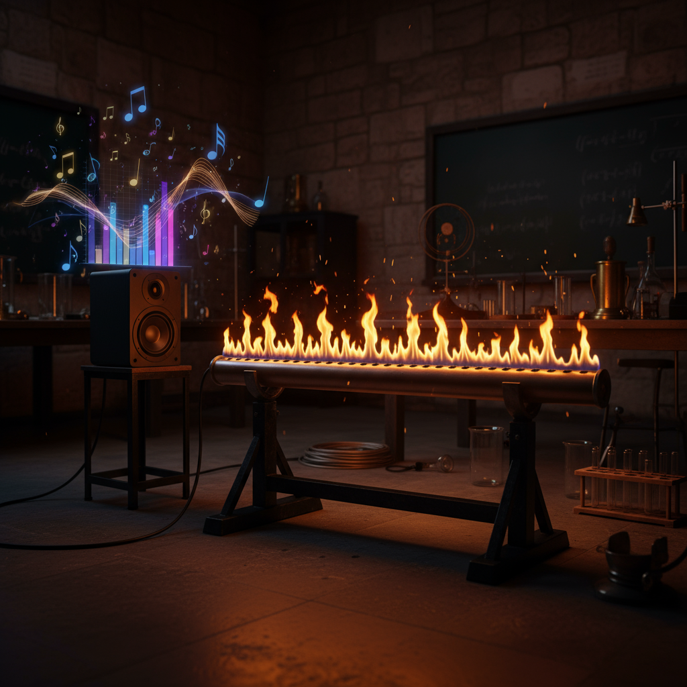

Meus projetos de Iniciação Científica

Lamaduh Ka Hua: Sabonete facial hidratante com extrato da semente da Araucária angustifolia
Este projeto abrange o desenvolvimento de um sabonete, que utiliza extrato de pinhão para estimular a retenção de líquidos na face e promover a hidratação, com o auxílio de ativos manipulados em laboratório, como vitaminas A, E e ácido hialurônico.

Sinapses musicais: Funcionamento da música no cérebro como instrumento de aprendizado Artificial
Esse projeto visa explicar como a música é processada no cérebro humano, as reações diferentes provocadas para cada indivíduo e como a mesma pode ser utilizada para auxiliar no aprendizado.

Labaredas dançantes: Um experimento com fogo e música
Esse projeto é baseado no experimento Tubo de Rubens, e explica a relação entre música e som, como as diferentes frequências alteram o tamanho do fogo e mostram de forma visual o impacto das ondas sonoras.